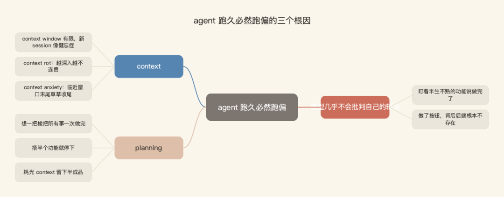
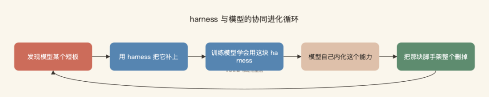
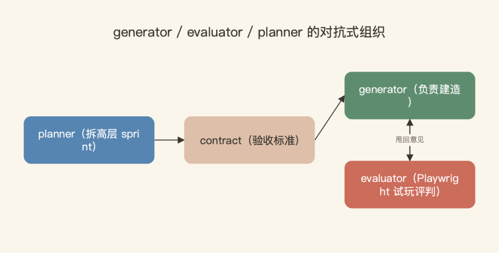
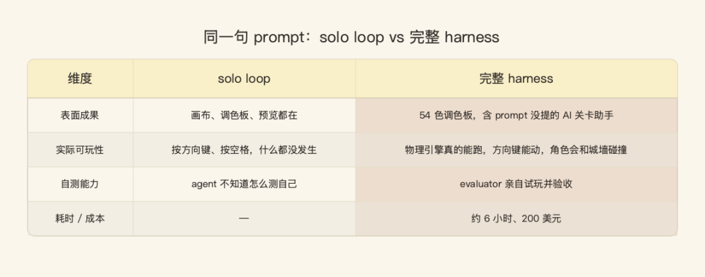

Ash 一上台先问了全场一个问题："你们现在有几个 agent 正在后台替你干活？" 举手的只有两三个。他笑了笑："应该更多才对。"
这是 AI Engineer Europe 2026 上 Anthropic 的一场 workshop，台上两位是 Applied AI 团队的 Andrew Wilson 和 Ash Prabaker。主题只有一句话：怎么让一个 agent 连续自主跑几个小时、甚至几天，还不"迷失剧情"。
值得先记住一组反差。一年前，Claude Code 还在为写 bash 命令、给字符串转义而挣扎，一次最多跑 20 分钟；今天，几乎整个 Claude Code 都是它自己写出来的，能连续跑好几天。中间这段路是怎么走通的，就是这 70 分钟在讲的事。
听完我想从自己的角度讲四件事：为什么 agent 跑不久就会跑偏、Anthropic 怎么看"练模型还是搭脚手架"这条岔路、当下最有效的 harness 长什么样、以及——最容易被忽略的——怎么把它真正调好。
一、为什么 agent 跑着跑着就跑偏了
Andrew 把这件事拆成三个难题，有的直观，有的相当反直觉。

第一个是 context。context window 是有限的，开一个新 session 就像得了健忘症，agent 得从头来过，所以你需要某种 memory。更麻烦的是 context rot——session 越深入，连贯性越差；还有一种叫 context anxiety 的现象，模型快用到窗口末尾时会变得"焦虑"，急匆匆把手头的事草草收尾。
这像一个人加班到后半夜：越往后脑子越糊，眼看着要到点了，手里的活就开始凑合交差。
第二个是 planning。模型开箱即用并不擅长规划，要么想一把梭把所有事一次做完，要么搭了半个功能就停下，要么干脆把 context 耗光，留下一个半成品。
第三个最反直觉：模型几乎不会批判自己的输出。我们都知道模型会 sycophantic、顺着你说好话，但这一点同样发生在写代码上——它会盯着一个半生不熟的功能说"嗯，看起来做完了"，然后转身去做下一件；它会做一个按钮，但背后的后端根本不存在，表面上却像功能已经完成。
这三件事叠加起来，就是 agent 一旦跑久了必然"跑偏"的根因。
二、练模型，还是搭脚手架
要解决这些问题，Andrew 说本质上只有两条路。
一条是把能力训进模型权重本身。最直观的证据是那张 METR 图——在一个极简脚手架下，agent 能连续运行多久、并完成一半的任务。一年时间，这个数字的变化是这样的：
| 模型 | minimal scaffold 下的任务时长 |
|---|---|
| Claude 3.7 Sonnet | 约 1 小时 |
| Opus 4.6（一年后） | 约 12 小时 |
另一条路是改 harness——模型外面那一圈脚手架。agent SDK 里那些 primitive 都属于这一层：核心的 agent loop、subagent、从 CLAUDE.md 和 skills 里带进来的上下文、权限系统。你用这套框架，给自己要做的事搭一个专用的 harness。
真正的洞察在这里：harness 不会随着模型变强而消失，而是和模型一起协同进化。
Anthropic 过去一年每发一个模型，几乎都同时发布一批 harness 变更。流程通常是：先发现模型的某个短板，用 harness 把它补上；然后训练模型学会用这块 harness；等模型自己内化了这个能力，再把那块脚手架整个删掉。Andrew 一年的发布时间线——从 Sonnet 3.7、Claude Code research preview，到 Ralph loop、checkpoints、skills、server-side compaction、1M context——就是这个循环一遍遍跑出来的。

这一条特别值得管理者记住。很多人现在会问：模型都这么强了，还需要 prompt engineering、还需要那些工程脚手架吗？一线给出的答案是：需要，但脚手架在不断往上移。今天你手搭的东西，明天可能就被模型吃进去了；可搭脚手架这件事本身不会停。
这条线我之前写《会写 prompt，已经不够了》时也聊过——工程的重心，正从写 prompt 往搭 loop、调 harness 上移。
三、当下最有效的 harness：让两个 agent 互相较劲
讲到 state of the art，Ash 抛出了全场最硬的一个判断：自我评判是个陷阱。
如果你让一个 agent 去 review 它自己的 PR，你大概已经知道结局了。它会给自己盖个橡皮图章。原因上面讲过——模型最不擅长的就是批判自己。
那怎么破？关键不对称在这里：
Tuning a standalone critic to be harsh is very tractable; tuning a builder to be self-critical is not.
把一个独立的 critic 调得严苛，是非常容易做到的；但把一个 builder 调得会自我批判，几乎做不到。
Ash 给了个特别贴切的类比：让我去评一幅画、点评一道菜，很容易；让我亲手画出来、做出来，难得多。这套 harness 做的，就是在利用"LLM 当 critic 的能力"远强于"它当 builder 时自我批判的能力"这个落差。
具体结构借了 GAN 的思路：一个 generator 负责建造，一个 evaluator 负责评判，两者拆成各自独立的 context window、各自独立的 system prompt，中间用对抗压力顶着。关键是，这个 evaluator 不是读读 diff 就完事——它用 Playwright 真的把页面打开，点来点去，亲自试玩，再把意见甩回给 generator。
光有两个角色还不够，再加一个 planner，整套就成了一个 PM、IC、QA 的组织结构。planner 只把一句话拆成高层的 sprint，故意不去规划琐碎的技术细节——因为细节一旦定错，会跨越每一个 sprint 级联放大。然后 generator 和 evaluator 先就"做到什么算完成"谈出一份 contract（有个 app 谈出了 27 条验收标准），双方都同意了才动手建。

最有说服力的是一个叫 RetroForge 的例子。同样一句 prompt——"build a retro game maker"，同样的模型，跑两遍。

第一遍是 solo loop，agent 自己循环。结果表面上有模有样：画布、调色板、预览都在；但进了游戏模式，按方向键、按空格，什么都没发生。agent 根本不知道怎么测自己，也不知道"玩一个游戏并通关"到底意味着什么。
第二遍上了完整 harness，大约花了 6 小时、200 美元。它给自己起名 RetroForge，做了 54 色调色板，连 prompt 里压根没提的"AI 关卡助手"都做了出来，物理引擎真的能跑，方向键能动，角色会和城墙碰撞。Ash 的总结很干脆：
The difference between this output and the previous output is entirely just scaffolding.
这两个输出之间的差别，完完全全只是脚手架。
四、最被低估的一步：坐下来读 trace
这部分 Ash 讲得很诚实，也是我觉得最有用的一段。
他直说：Claude 开箱即用，是个相当糟糕的 QA agent。同样的 sycophancy 和"宽容"偏见在这里照样发作——早期跑的时候，QA agent 经常找到一个 bug，然后说"这个先记下来，过两周再修吧"，接着就当没事了。
那怎么把它调好？没有秘诀。
The primary debugging loop was reading what the agent actually did, and not necessarily running more experiments.
主要的调试循环，是去读 agent 到底做了什么，而不是去跑更多实验。
就是一行行读 trace，找到模型的判断和人类判断分岔的那个点，然后针对它去调 prompt。Ash 说这用的是和读 stack trace 一样的肌肉。
他还讲了个训练同理心的方法，我印象很深。想象你要操作一个网页，但全程闭着眼睛，每隔十秒才睁眼看一眼静态截图、然后又闭上，还得继续操作——这就是模型当时的处境。你只有真正把自己放进模型的位置，才知道下一次该怎么把指令写得更好。
还有一个反过来的纪律：随着模型变强，要主动把 harness 删薄。4.5 时代必须的 context resetting、sprint 拆分，到了 4.6 全砍了——4.6 已经能连续跑两小时不丢连贯性，单 session 加 compaction 就够。Ash 的说法是：
不是我们的 harness 错了，它对 4.5 是对的；是 frontier 移动了，于是我们跑了个简化版看看效果。
几条最值得记住的
把这场 workshop 收拢成几条能直接用的：
- 别让 AI 自己审自己。把"建造"和"评判"拆成两个独立角色，给 evaluator 一个专门挑刺的 harsh prompt。这一条对大量正在用"让 Claude 检查自己代码"的团队最直接。
- compaction 不等于 coherence。lossy 的摘要会让 agent 慢慢 drift，结构化的 handoff 加干净的 context 才靠谱。
- 主观质量是能打分的。大多数人觉得 taste 没法量化，但只要你对"好"有足够强的观点、把它写成 rubric，就能让 evaluator 照着爬。
- 最被低估的技能是读 trace，不是堆更多自动化 eval。坐下来一行行读，你才知道脚手架哪块该删、哪块该留。
- harness 是活的。frontier 一移动，就回头把对应的脚手架删掉，别留着当技术债。
Ash 最后留了一句话，也是这场分享的题眼：
The frontier doesn't shrink, it just moves.
前沿不会收缩，它只是在移动。
反过来读这句更有意思：工程不会消亡，只会上移。你今天亲手搭的脚手架，明天可能被模型吸收掉；但搭脚手架、读 trace、把品味写成 rubric 这套能力本身，不会过时——它只会换一个落点。
如果你手上正好有一个流程，是靠"让 AI 自己检查自己"在兜底的，下周不妨挑出来改一下：拆成两个独立角色，一个负责建、一个拿着专门挑刺的 prompt 去用，然后看看结果差多少。大概率，差的那部分，完完全全只是脚手架。